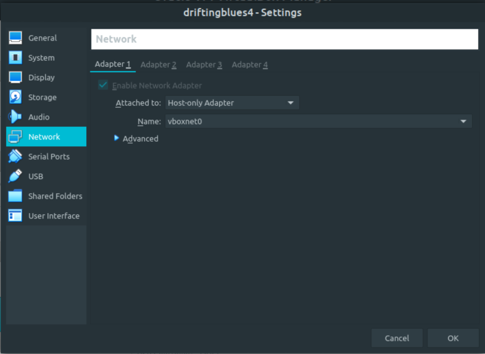
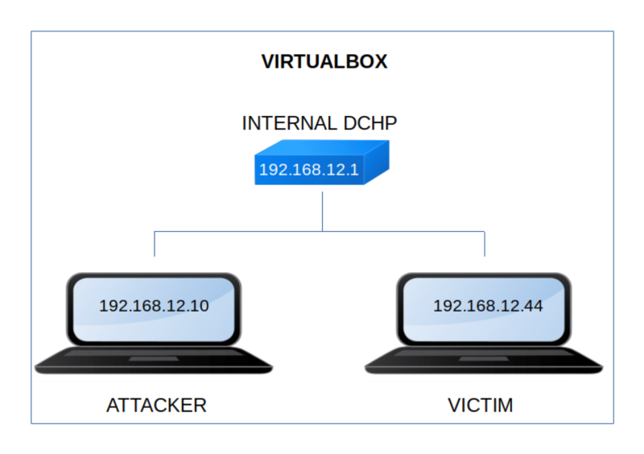

DriftingBlues 4
▸ DriftingBlues 4
▸ 1. Scan Network
▸ 2. Finding Services and Ports
▸ 3. Enumerate
▸ 3.1 Discover hidden messages
▸ 3.2 Decode message
▸ 4. Exploitation
▸ 4.1 Getting password from user's file with hydra
▸ 4.2 Connect via FTP
▸ 4.3 Create your own Public and Private keys
▸ 4.4 Get privilege user
▸ 4.5 Connect via SSH (First flag)
Difficulty: Easy.
Flag: 2 flags.
Learning:
• Reconnaissance
Scan Network
Find services
• Enumerate
Discover hidden messages
• Exploitation
Get FTP passwords from users's files witih hydra
Connect via FTP
Create your private and public keys
Get privilegee user
Connect via SSH with private key file
• Privilege Escalation
Find sudo permissions for user
Create a root shell
• Download (Mirror): https://download.vulnhub.com/driftingblues/driftingblues4_vh.ova
• Download (Torrent): https://download.vulnhub.com/driftingblues/driftingblues4_vh.ova.torrent
Install the machine on VirtualBox:
1. Download the file.
2. On Virtualbox choose File->Import Appliance.
3. Select the file “ova”.
4. Accept to import.


Watch your Machine IP.
$ ifconfig
Output:

Diagram
